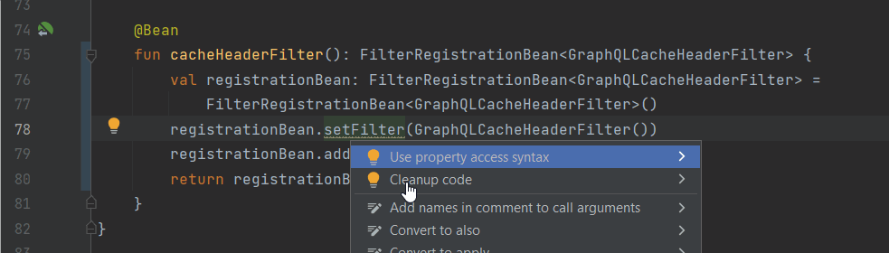
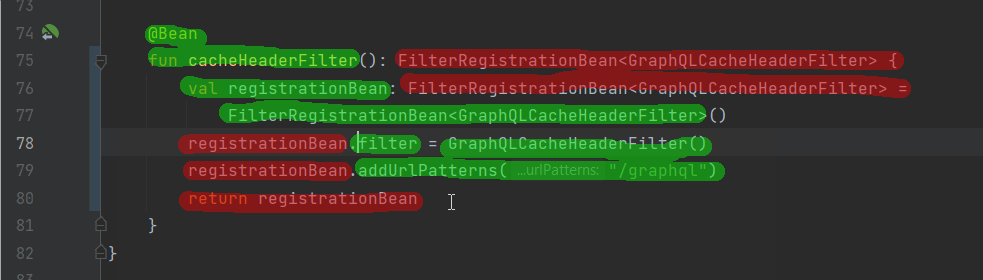

Kotlin's conciseness
And what it means for readability and maintainability
Since Kotlin's inception, it is inevitable that people compare it to Java and ask questions like "Is it worth it?" or even "Do we need it?". Personally, I can tell that it was sometimes hard to publicly like Kotlin because a lot of people that actually never used Kotlin for more than a hello world example always started discussions, downplayed and negated what the language and the ecosystem really deliver. In 2023, six years after the 1.0 release of Kotlin, the situation changed a lot and now I just want to say that I am really thankful and super happy with over 6 years of Kotlin in production usage for me. One of the key features that Kotlin delivers over Java is conciseness.
And I picked an example of a very small refactoring to show why Kotlin is so great for making good projects that bring back developer's joy:

So what happens here?
We have a bean declaration in a spring project for a filter that adds some caching headers to a graphql endpoint. It was written as verbose as it could be.
We start with a thing that became a mantra for Java developers:
Reading code is more important than writing it
This is because most code gets written only once by a single person and afterwards read multiple times by multiple people. So code has to be readable. But what does it even mean?
This Reddit thread is a good read, because it shows how many different points of view people out there have regarding good code or readability. Initially I wrote a lot of text here referencing different aspects of this Reddit thread and then realized that there's no use in that. Everyone and his aunt has an opinion about it and doesn't want to change it. And instead, I return to just being happy, referecing only one user's (Yawkat) comment which I particularly liked and agree with:
"Conciseness does not always work against readability, in fact it can improve it by removing irrelevant clutter. Readability is always the goal, conciseness is just one way to achieve it."
For me (oh no, now I add another take to the mix... ) the resulting code is more readable, because
- it removes multiplication of information about what bean the method creates. Type inference for local variables and method return types as language features help here. An additional benefit is that the types automatically change together when the constructed type changes (which is good for most module internal code).
- it removes noise code that was needed for the initialization/configuration of the bean. Scope functions help here.
- it removes the need for a method body and return statement, as the whole thing can be merged into a single expression. Thanks to a feature called expression bodies.
- it removes some braces by replacing a function call with a property assignment, which shows more clearly what its meaning actually is.
Here is a better view of what I consider noise code (red) in the initial version:

What's left is the actual useful code. So when reading is more important than writing, I guess I removed 50% of the work for multiple people that will need to read that. This assumption only holds as long as I didn't increase the time people need to think about the code while reading it. But I really don't think I did - but just in case, I validated it with a second and third opinion from two colleagues of my team. What the people who actually have to work with the code think about it is much more important than what some other random people think. Sure, when you don't know about scope functions you can't take a look at the code and know what apply does. But pretty much every Kotlin developer knows about them, so there's no reason not to use them as an advantage in the given situation.
Applying this effect to whole codebases reduces the amount of code by such a large margin, that it transforms projects from scary to manageable.